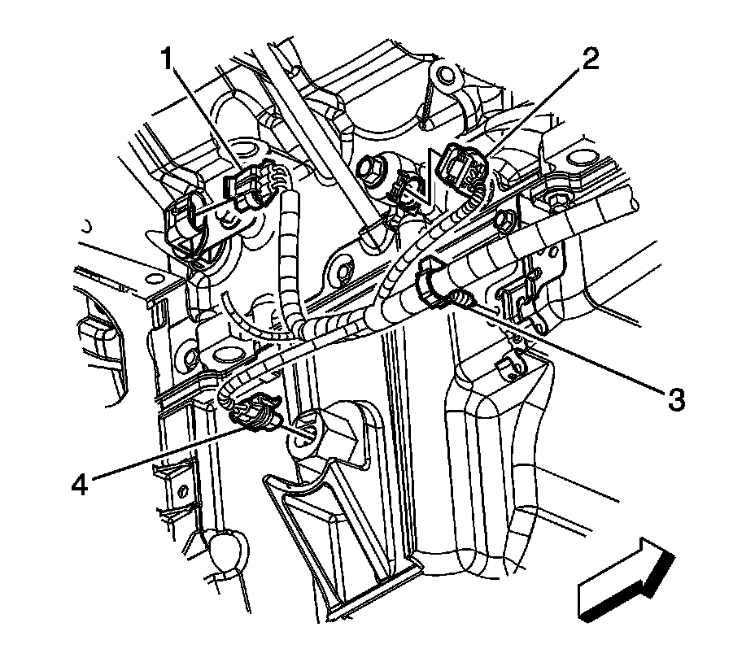
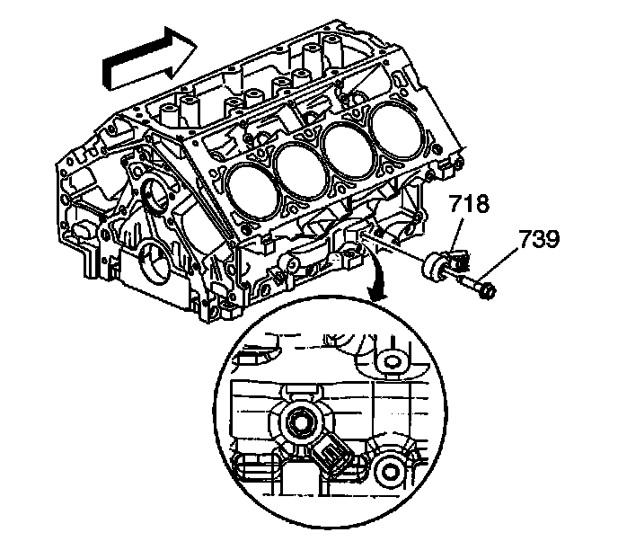

Knock Sensor 2 Replacement
KNOCK SENSOR 2 REPLACEMENT
REMOVAL PROCEDURE

1. Remove the right front wheel and tire.
2. Working through the wheel well opening, disconnect the engine wiring harness electrical connector (2) from knock sensor.

3. Remove the knock sensor bolt (739) and knock sensor (718).
INSTALLATION PROCEDURE
1. NOTE: Refer to Fastener Notice.
Position the knock sensor (718) to the engine block and install the knock sensor bolt (739).
Tighten the bolt to 25 N.m (18 lb ft).
2. Connect the engine wiring harness electrical connector (2) to knock sensor.
3. Install the right front wheel and tire.